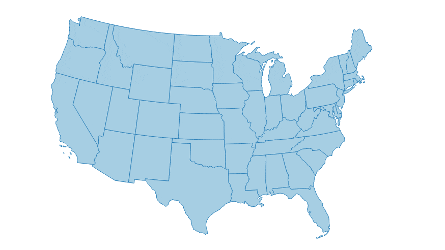
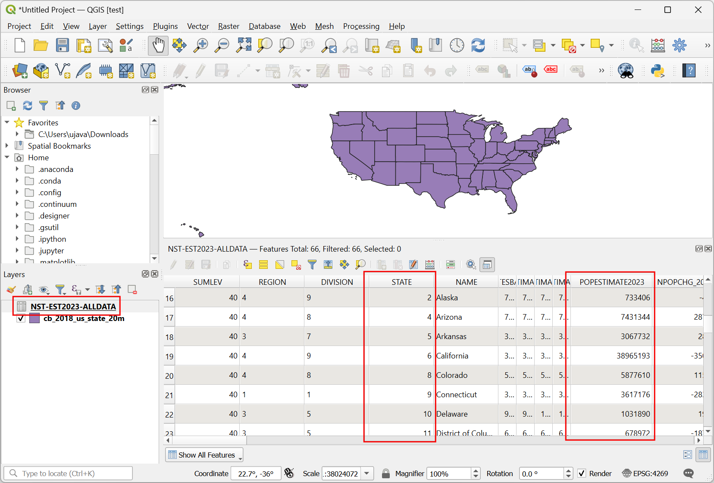
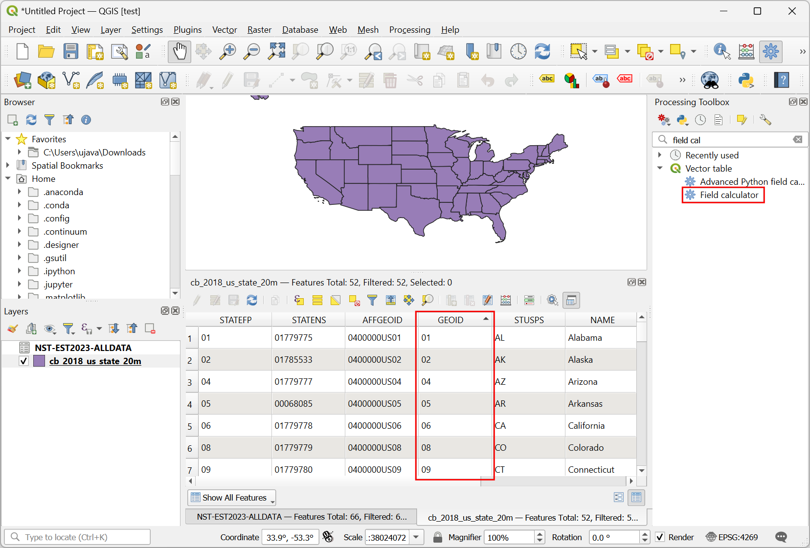
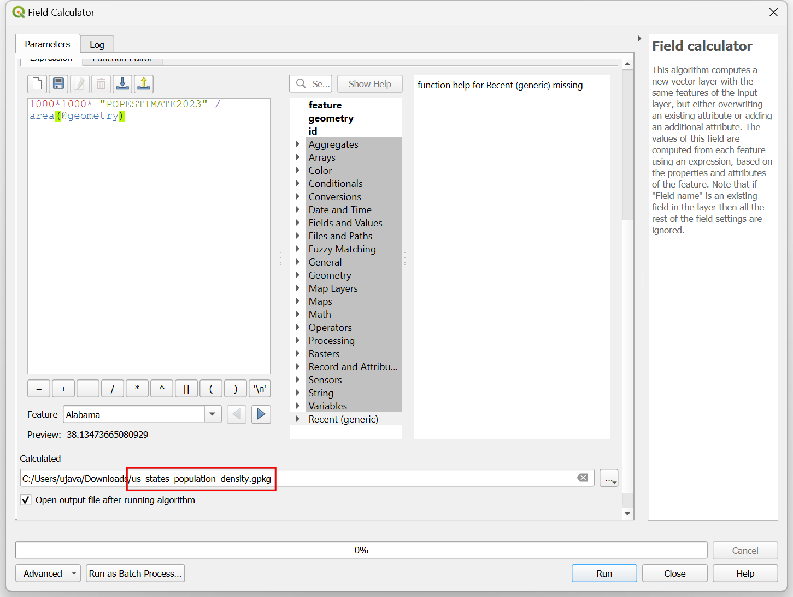
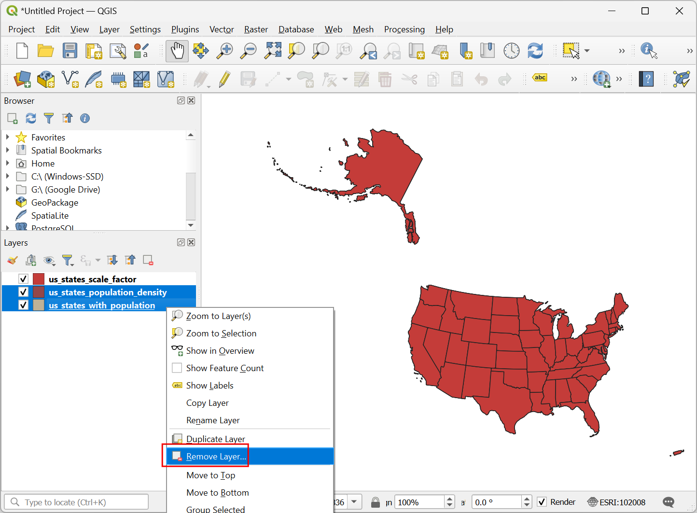
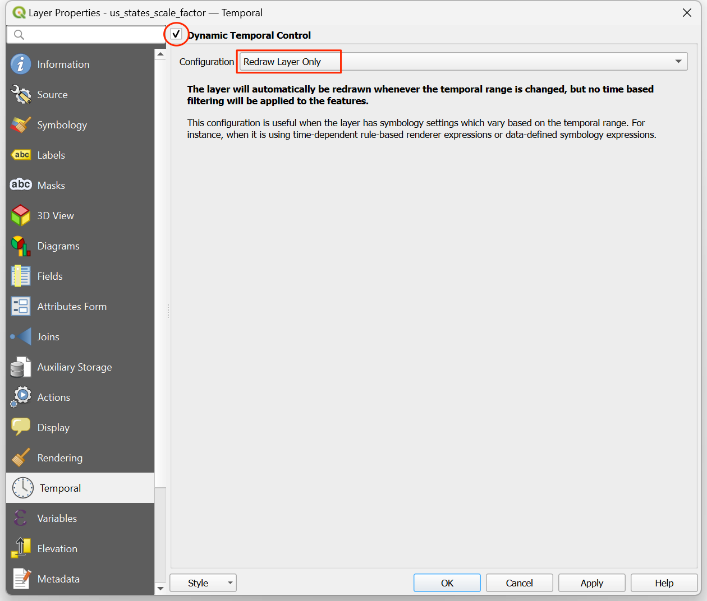

Creating an Animated Cartogram (QGIS3)¶
Cartogram is a type of map visualization where the shape of each feature is distorted in proportion to a variable. Cartograms makes it easy to see large variations in the data easily. The simplest method to create a cartogram is by scaling the size of each region according to a variable. This method retains the original shape of the polygon and only changes the size. These are known as Non-contiguous isomorphic cartograms. In this tutorial, we will learn how to use QGIS expressions to create a cartogram and use the Temporal Controller to create an animation that gradually transforms the features to the target size.
This tutorial is inspired by Keith Jenkins’s Demo and builds on Hans van der Kwast’s excellent cartogram tutorial.
Overview of the task¶
We will take a layer of states in the US and create an animated cartogram by scaling each state by population. The resulting map will have each state sized according to its population.

Get the data¶
United States Census Bureau provides cartographic boundary files along with demographic datasets. We will download the data and process them to create a data layer suitable for our task.
Visit the Cartographic Boundary Files - Shapefile data page on the US Census Bureau website. Scroll down and download the States shapefile
cb_2018_us_state_20m.zip. This has the state polygons we need for the visualization.

The state polygons do not have any demographic data. This data needs to be downloaded separately and joined with the shapefile for use in a GIS. Visit the State Population Totals and Components of Change: 2020-2023 page and download the Annual Population Estimates, Estimated Components of Resident Population Change, and Rates of the Components of Resident Population Change for the United States, States, District of Columbia, and Puerto Rico: April 1, 2020 to July 1, 2023 dataset which will be downloaded as
NST-EST2023-ALLDATA.csv.

Open QGIS. Locate the
cb_2018_us_state_20m.zipfile in the QGIS Browser and expand it. Drag and drop thecb_2018_us_state_20m.shplayer to the canvas.

A new layer
cb_2018_us_state_20mwill be added to the Layers panel. Next, we will load the CSV file. Click the Open Data Source Manager button.

Switch to the Delimited Text tab. Click … next to File name and browse to the downloaded
NST-EST2023-ALLDATA.csvfile. Expand the Geometry Definition section and selectNo geometry (attribute only table). Click Add.

A new layer
NST-EST2023-ALLDATAwill be added to the Layers panel. Right-click and select Open Attribute Table. This table as the population counts in thePOPESTIMATE2023column. Each state has a unique id in theSTATEcolumn that we will use to join this table with the polygon layer.

Right-click the
cb_2018_us_state_20mlayer and select Open Attribute Table. The state ids are contained in theGEOIDcolumn. White the numbers are the same, they are formatted as a 2-digit 0-padded number. To match these with theSTATEcolumn from our population table, we need a similarly formatted numbers. Select theNST-EST2023-ALLDATA. Go to . Search and locate the algorithm. Double-click to open it.

In the Field calculator dialog, select
NST-EST2023-ALLDATAas the Input layer. EnterGEOIDas the Field name and set the Result field type toText (string). We will now take the numbers from theSTATEfield and use thelpad()function to create a 2-digit 0-padded string. Enter the following expression and click Run.
lpad("STATE", 2, '0')
A new layer
Calculatedwill be added to the Layers panel. Right-click and select Open Attribute Table. Note that the newly createdGEOIDcolumn has correctly formatted identifiers. We can now use this field to join this table with the states layer. Search and locate the algorithm. Double-click to open it.

In the Join attributes by field value dialog, select
cb_2018_us_state_20mas the Input layer. SelectGEOIDas the Table field. For Input layer 2, select our tableCalculatedand Table field 2 selectGEOID. The table has many columns but we only need the population for the latest year. Click the … button for Layer 2 fields to copy and select only thePOPESTIMATE2023field. Leave other options to their default value and click Run.

A new layer
Joined layerwill be added to the Layers panel. Before using this layer for our cartogram, let’s reproject it to a projected CRS. Search and locate the algorithm. Double-click to open it.

In the Reproject layer dialog, select
Joined layeras the Input layer. For the Target CRS, click the Select CRS button. Search for theNorth_America_Albers_Equal_Area_ConicCRS and select it. This is our final layer so we will save it to disk. Click the … button next to Reprojected and select Save to File...

Enter the name of the layer as
us_states_with_population.gpkgand select Save. Click Run to create the GeoPackage file with the reprojected data.

We will use this layer in the next section. For convenience, you may directly download a copy of the above layer from below:
us_states_with_population.gpkg
Data Source [USCENSUS]
Procedure¶
Start a new QGIS project. Locate the
us_states_with_population.gpkgfile in the Browser and expand it. Drag and drop theus_states_with_populationlayer to the empty canvas.

A new layer
us_states_with_populationwill be added to the Layers panel. Right-click and select Open Attribute Table. For our cartogram, we want to use the population values in thePOPESTIMATE2023. Close the attribute table.

Click the Open the layer styling panel button in the Layers panel. Select Simple Fill and open the drop-down selector for Symbol layer type.

Set the Symbol layer type to
Outline: Simple Lineand select a Color of your choice. This symbol layer will act as a reference for our map when we resize the polygons. Click the :guilabel:` + Add Symbol layer` button.

A new symbol layer Simple Fill will be added. Set the Fill color to the same color as the lines. Open the drop-down selector for Symbol layer type.

Select
Geometry Generatoras the Symbol layer type. Geometry generator allows us to modify the geometry for rendering using expressions. Click the Expression Builder button.

We will use the scale() function which resizes the given geometry by X- and Y-scaling factors. For our cartogram, we want to resize each polygon by the ratio of its population to the highest population. Enter the following expression to apply this scaling and click OK.
scale(@geometry, "POPESTIMATE2023" / maximum( "POPESTIMATE2023"), "POPESTIMATE2023" / maximum( "POPESTIMATE2023") )
You will see the state polygons are now sized by the proportion of each state’s population to the highest population. Many large states with small population are now much smaller than their original size. You will notice that polygons with irregular shapes are off-center after being scaled. This is because the anchor point of the scaling is the centroid of the geometry’s bounding box - which often falls outside of the actual polygon. Let’s update our expression to fix this. Click the Expression Builder button.

The scale() function takes an optional parameter to specify the scaling center point. We will use the pole_of_inaccessibility() function to find a representative anchor point for each polygon. This is similar to a centroid, but it is guaranteed to be inside of the polygon whereas centroid can fall outside for certain shapes. Update the expression as shown below and click OK.
scale(@geometry, "POPESTIMATE2023" / maximum( "POPESTIMATE2023"), "POPESTIMATE2023" / maximum( "POPESTIMATE2023"), pole_of_inaccessibility(geometry_n(@geometry,@element), 100) )
Now the scaled polygons will have much better placement. We see another problem. Many features in the layer are Multipolygons, i.e. they have more than one parts. Such features have 2 or more polygons that are part of the same geometry. With our current expression, both are scaled with same anchor point computed from the combined geometry. This is not ideal. For example, a large feature with multiple islands should be scaled such that each island is scaled with its own center point. To fix this, we update our expression to iterate over each part of the geometry and scale it with its own center. Click the Expression Builder button.

Here we use the array_foreach() function to iterate over each part of the geometry and generate the scaled versions of them. Finally collect_geometries() function combines each scaled part into a single multi-polygon geometry. Update the expression as shown below and click OK.
collect_geometries( array_foreach(generate_series(1, @geometry_part_count), scale(geometry_n(@geometry,@element), "POPESTIMATE2023" / maximum( "POPESTIMATE2023"), "POPESTIMATE2023" / maximum( "POPESTIMATE2023"), pole_of_inaccessibility(geometry_n(@geometry,@element), 100) ) ) )
The result is much better. Select the Simple Fill symbol layer and change the Stroke color to a darker shade of the fill color.

Our cartogram is ready. This map shows the concentration of population in the US to a handful of states and striking absense of population in states west of the Mississippi river. We can make an improved visualization by creating an animation that slowly transforms the original rendering to the final size. Click the Temporal Control Panel button with the Clock icon in the Map Navigation Toolbar.

Select the Animated temporal navigation button. The default Animation range will be populated with a 24-hour window in the increment of 1-hour. This is fine for our use case as we will get 24-frames of animation. You can adjust this if you want a slower/faster animation.

Right-click the
us_states_with_populationlayer and select Properties.

Select Temporal tab and enable the Dynamic Temporal Control. This layer will be updated using expression so we don’t need to configure it here. Just select
Redraw Layer Onlyso that the layer is refreshed after each time step and rendered with the updated values from the expression.

Let’s update our Geometry Generator expression to use the animation time steps and gradually scale the geometry. Click the Open the layer styling panel button in the Layers panel. Select Geometry Generator followed by the Expression Builder button.

Here we want to start with a scale factor of 1 and end up with the final scale factor of
"POPESTIMATE2023" / maximum( "POPESTIMATE2023"). We use the scale_linear() function which takes the time of the current time-step and calculates the scale factor using the start and end times. Update the expression as shown below and click OK.
collect_geometries( array_foreach(generate_series(1, @geometry_part_count), scale(geometry_n(@geometry,@element), scale_linear( epoch(@map_start_time), epoch(@animation_start_time), epoch(@animation_end_time), 1, "POPESTIMATE2023" / maximum( "POPESTIMATE2023")), scale_linear( epoch(@map_start_time), epoch(@animation_start_time), epoch(@animation_end_time), 1, "POPESTIMATE2023" / maximum( "POPESTIMATE2023")), pole_of_inaccessibility(geometry_n(@geometry,@element), 100) ) ) )
Back in the Temporal Controller panel, click the Play button to see the animation. You should see the shape of each polygon gradually scaled after each frame. Our expression is quite long and has repetitive code. We can make it more readable so it is easier to maintain. Click the Expression Builder button.

We can use the with_variable() function to assign a named variable to an expression and refer to it again by its name. This helps us avoid repeating the same expression multiple times. Update the expression as shown below and click OK.
with_variable( 'scale_factor', scale_linear( epoch(@map_start_time), epoch(@animation_start_time), epoch(@animation_end_time), 1, "POPESTIMATE2023" / maximum( "POPESTIMATE2023")), collect_geometries( array_foreach(generate_series(1, @geometry_part_count), scale(geometry_n(@geometry,@element), @scale_factor, @scale_factor, pole_of_inaccessibility( geometry_n(@geometry,@element), 100) ) ) ))
Once you are happy with the configuration, we can export the animation. Click the Export Animation button.

In the Export Map Animation dialog, click … next to Output directory and browse to any folder on your computer. Keep all the other options to their default value and click Save.

The individual frames of the animation will be exported as images. We can create a video or animated GIF from these frames. I recommend using the website ezgif.com that allows you to create GIFs from individual images easily. Visit Ezgif Animated GIF Maker. Browse to the exported animation frames and click Upload files!.

Configure the GIF options by setting the Delay time to
5. Check crossfade frames effect and set the Fader delay and Fader count to2. Click Make a GIF!/

Click the save button to download the animation as a GIF file.
If you want to give feedback or share your experience with this tutorial, please comment below. (requires GitHub account)